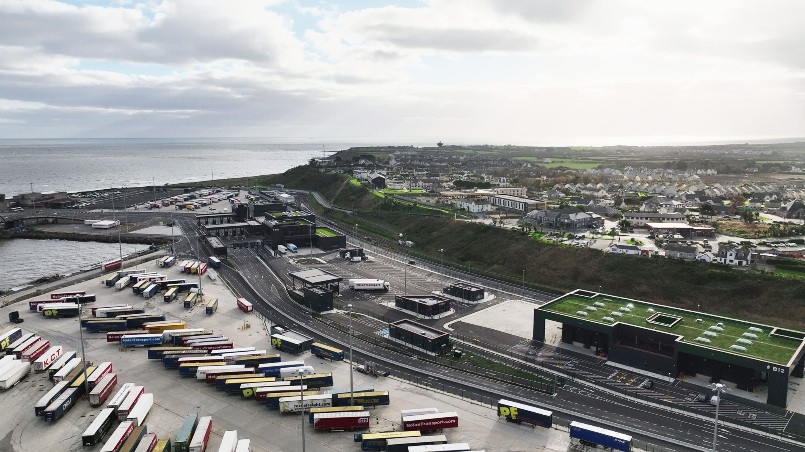

Civil & Infrastructure
Infrastructure, active travel, flood relief, utilities, ports, logistics and energy.

Welcome to DBFL
A future-facing digital home for DBFL’s people, expertise, projects and four-decade story.
Discover DBFLWhat We Do
A clearer service structure gives clients a faster route to the right team, while flexible content blocks give DBFL staff control over every page.
Infrastructure, active travel, flood relief, utilities, ports, logistics and energy.
Innovative structural solutions for residential, commercial, civic and heritage projects.
Planning, modelling, GIS and sustainable mobility strategies for modern communities.
Featured Work



DBFL News & Insights